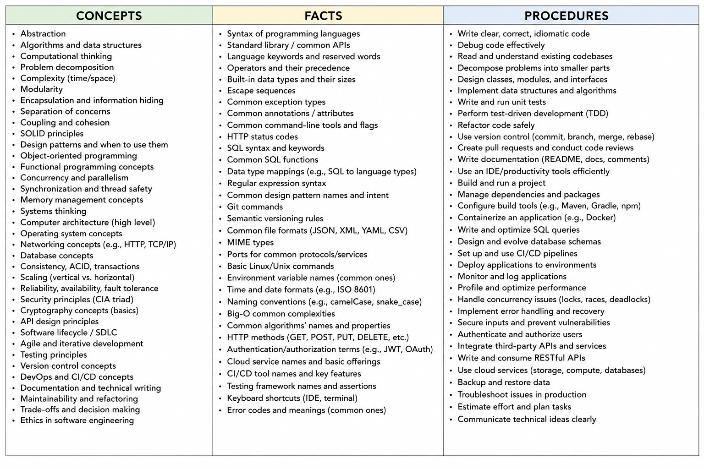

Ultralearning Ch. 4 - Principle 1 - Metalearning
First Draw a Map
Scott illustrates a language learning technique. A man named Everett is learning a new language by using a stick and pointing it to objects, picking up objects, performing actions, listening to a woman’s translation responses, and recording the results on a blackboard. In 30 minutes, he has more than two blackboards full of nouns, verbs, pronouns, and phonetic annotations. This is a good start for the first 30 minutes spent with any language.
How can this man start speaking a new language from scratch, without teachers or translations or even knowing what language he’s learning, in half an hour, when most of us struggle to do the same after years of high school Spanish classes? Is he a linguistic genius, or is there something else going on? The answer is our first principle of ultra learning: metalearning
What is Metalearning?
The prefix meta comes from Greece, meaning “beyond.” It typically signifies when something is “about” itself or deals with a higher layer of abstraction. In this case meta learning means learning about learning.
Everett also starts drawing a map with theories and hypotheses about how the language works grounded on years of experience learning languages. Theories and hypotheses include whether it’s a subject-verb-object language, whether it has plural markings on the nouns, etc. In addition to his enormous wealth of knowledge as a linguist, Everett has another trick that gives him an enormous advantage.
The demonstration he has presented is not his own invention. Called a “monolingual fieldwork” demonstration, this method was first developed by Everett’s teacher Kenneth Pike as a means of learning indigenous languages. The method lays out a sequence of objects and actions that the practitioner can use to start piecing together the language.
These two pieces in Everett’s linguistic arsenal — a richly detailed map of how languages work and a method that provides a path to fluency — have allowed Everett to accomplish a lot more than just learning some simple sentences. Over the last 30 years he has become one of only a handful of outsiders to become fluent in Piraha, one of the most unusual and difficult languages on the planet, spoken only by a remote tribe int he Amazon jungle.
I can draw some parallels here between Everett’s example and learning programming languages. Once you have a wealth of knowledge of how programming languages work, you are more able and capable to learn a new one. This can be done by taking formal programming courses. That, combined with a strategy for learning a new language quickly, such as writing programs such as a hello world program, a simple chat server, or a few other basic project tutorials using the language, you can learn enough functional details to be effective. I am standing on the shoulders of giants, because that method I learned about from someone else online.
I think the key takeaway is that it can be very useful to learn how to learn something. This process may differ depending on the subject. In math and physics, you have to understand concepts, so teaching the concept to others will be a good strategy to help understand; meanwhile in medicine you have to memorize things, so using a spaced-repetition software can help with this. Although in math and physics, sometimes you have to memorize things too.
The Power of your Metalearning Map
Everett’s case illustrates the power of using meta learning to learn new things faster and more effectively. Being able to see how a subject works, what kinds of skills and information must be mastered, and what methods are available to do so more effectively is at the heart of success of all ultra learning projects. Metalearning thus forms the map, showing you how to get to your destination without getting lost.
How to Draw Your Map
How can you apply this to get an edge in your own learning efforts? There are two main ways: over the short term and over the long term.
Over the short term, you can do research to focus on improving your meta learning before and during a learning project. You can tailor your project to your exact needs and abilities, avoiding the one-size-fits-all approach taken in school, potentially leading to faster completion times. However, there is also a danger of choosing unwisely and ending up much worse off. Meta learning research avoids this problem and helps you seek out points where you might even be able to get a significant advantage over the status quo.
Maybe I’ll so some more research for programming skills, though I think I already have an intuition for how to approach things. One thing I haven’t done is throw myself into the deep end and build a substantial project. I can learn a lot by doing. Maybe after I complete OSSU’s Core Programming section and MIT’s Missing Semester course then I will work on a project idea. I’m going a little slower in the sense that I’m taking 3 introductory courses (intro to CS, Systematic Program Design, and CS50x). Even though I’m experienced with programming already, it might make more sense to skip introductory courses, but I’m rebuilding my knowledge from the ground up, so I must humble myself and take these intro courses first.
I want to avoid the danger of choosing unwisely. This could mean taking courses that end up being unnecessary. You never know when you’ll need the information though, but some topics such as digital circuit design and computer graphics I think I can skip. Maybe it’ll be more clear later which other courses to skip, I’ll be flexible. I’ll invest some time combing through the topics of the curriculum again and scouting what I can skip.
If I combine the best from the OSSU and teachyourselfcs curriculums, I can gain an edge over my competition. I do plan on going through teachyourselfcs as well.
Over the long term, the more ultra learning projects you do, the larger your set of general meta learning skills will be. You’ll know what your capacity is for learning, how you can best schedule your time and manage your motivation, and you’ll have well-tested strategies for dealing with common problems. As you learn more things, you’ll acquire more and more confidence, which will allow you to enjoy the process of learning more with less frustration.
Next, we will go over some short-term research strategies, since they will probably benefit you the most.
Determining Why, What, and How
Why? refers to understanding your motivation to learn. If you know exactly why you want to learn a skill or subject, you can save a lot of time by focusing your project on exactly what matters most to you. For me, I want to learn programming because I want to become a great software engineer. Eventually, I also want to advance in my career. I also want to apply this knowledge to entrepreneurship.
What? refers to the knowledge and abilities you’ll need to acquire in order to be successful. Breaking things down into concepts, facts, and procedures can enable you to map out what obstacles you’ll face and how to best overcome them. I think for me, the knowledge and abilities I’ll need to acquire are anything related to software engineering, more importantly the fundamentals, which OSSU and teachyourselfcs will help me cover. Those curriculums serve as sort of a map for me to follow.
How? refers to the resources, environment, and methods you’ll use when learning. Making careful choices here can make a big difference in your overall effectiveness. The resources I’ll be using are OSSU, teachyourselfcs, and Google. My environment is just my quiet space at home. Methods I’ll be using are learning techniques such as active recall, learning by doing, the protege effect, etc.
Answering Why?
There are two broad motivations for any learning project: instrumental and intrinsic.
Instrumental learning projects are those you’re learning with the purpose of achieving a different, non learning result. For example, to benefit your career.
Intrinsic projects are those that you’re pursuing for their own sake. You’re learning the subject for its own sake, not as a means to some other outcome.
If you’re pursuing a project for mostly instrumental reasons, it’s often a good idea to do an additional step of research: determining whether learning the skill or topic in question will actually help you achieve your goal. Some people go for a master’s degree, and after 2 years and 10s of thousands of dollars in debt, they discover that it doesn’t actually get them much better job opportunities than before.
Personally, I’m doing my learning project for both reasons. I’m leaning a little more towards intrinsic though because I want to acquire this programming knowledge just for the satisfaction of learning it. But at the same time, I do want to make money again or use the knowledge for a good purpose, in the hopes of reviving my career. I don’t know how exactly I’m going to use the knowledge, whether I start a business or get back into the workforce. I’ll figure that out later. For now, I want to focus on learning as much as I can, as deeply as I can, while I have the free time. Maybe later I’ll change to instrumental and start aggressively tailoring my learning to a specific career outcome.
Tactic: The Expert Interview Method
The main way you can do research of this kind is to talk to people who have already achieved what you want to achieve. You can reach out to people in your network or on an online social network. The author gives some guidelines to follow when asking people for advice such as to keep it simple, to the point, explain why you’re reaching out to them and asking if they could spare fifteen minutes to answer some simple questions.
Answering What?
Now you can start looking at how the knowledge in your subject is structured. A good way to do this is to write down on a sheet of paper three columns with the headings “Concepts,” “Facts,” and “Procedures.” Then brainstorm all the things you’ll need to learn. It doesn’t matter if the list is perfectly complete or accurate at this stage. You can always revise it later. Your goal here is to get a rough first pass. Once you start learning, you can adjust the list if you discover that your categories aren’t quite right.
Concepts
In the first column, write down anything that needs to be understood. Concepts are ideas that you need to understand in flexible ways in order for them to be useful. Math and physics, for example, are both subjects that lean heavily towards concepts. Some subjects straddle the concept/fact divide, such as law, which has legal principles that need to be understood, as well as details that need to be memorized. In general, if something needs to be understood, not just memorized, I put it into this column instead of the second column for facts.
Facts
In the second column, write down anything that needs to be memorized. Facts are anything that suffices if you can remember them at all. You don’t need to understand them too deeply, so long as you can recall them in the right situations. Languages, for instance, are full of facts about vocabulary, pronunciation, and, to a lesser extent, grammar. Even concept-heavy subjects usually have some facts. If you’re learning calculus, you will need to deeply understand how derivatives work, but it may be sufficient to memorize some trigonometric identities.
Procedures
In the third column, write down anything that needs to be practiced. Procedures are actions that need to be performed and may not involve much conscious thinking at all. Learning to ride a bicycle, for instance, is almost all procedural and involves essentially no facts or concepts. Many other skills are mostly procedural, while others may have a procedural component yet still have facts to memorize and concepts to understand. Learning new vocabulary in a language requires memorizing facts, but pronunciation requires practice and therefore belongs in this column.
There are many concepts, facts, and procedures for me to recall all of them from memory. This sounds like a good use case for Chat GPT. I put the above into chat gpt for software engineering, and it produced this image:

I also decided to replace column with list and got a text output. There’s a good amount of concepts, facts, and procedures for mastering software engineering or computer programming. I got slightly different answers when I put software engineering as the subject vs. software development vs. computer programming, with a good amount of overlap.
Using this Analysis to Draw your Map
Once you’ve finished your brainstorm, underline the concepts, facts, and procedures that are going to be most challenging. I will ask Chat GPT about this. This will give you a good idea what the major bottlenecks are going to be and can start you searching for methods and resources to overcome those difficulties. You might recognize that learning medicine requires a lot of memorization, so you may invest in a system such as spaced-repetition software. If you’re learning math, you might recognize that deep understanding of certain concepts is going to be the tricky spot and consider spending time explaining those concepts to other people so you really understand them yourself. Knowing what the bottlenecks will be can help you start to think of ways of making your study time more efficient and effective, as well as avoid tools that probably won’t be too helpful to your goal.
For software engineering, some of the most difficult concepts are Distributed systems consistency & tradeoffs, system design at scale, Concurrency & correctness under parallel execution, Abstraction design (good boundaries), and Managing change over time (software evolution). In teachyourselfcs, they recommend the book designing data intensive applications. That can help with distributed systems and system design. Hello interview can help with the system design interviews. This is for later in the ultra learning journey. For concurrency/parallel programming, there is a parallel programming course in OSSU. Luckily, I took parallel programming during my CS degree, so I think I’ll be able to grasp this concept when I revisit it. Abstraction design includes Designing clean interfaces, Avoiding overengineering vs underengineering, and Managing coupling across modules; I think this intuition will naturally be built with experience and going through the courses. Managing change over time includes refactoring large systems safely, handling technical debt, and designing for unknown future requirements. I’m hoping that the software engineering course on OSSU will cover some of these topics.
Some of the most challenging facts are API surface knowledge (ecosystem-specific), network and protocol details, database engine behaviors, and language-specific corner cases. I think these facts can be learned as-needed when they come up on the job.
Finally, ChatGPT says the most challenging procedures are debugging large systems, system design interviews / real design work, production incident response, refactoring safely at scale, and writing robust tests. Debugging and software testing can be learned in OSSU, otherwise experience on the job will make me better. Production incident response requires insight that gain be gained on the job or through knowledge from OSSU. Refactoring safely at scale, hopefully OSSU will cover this at some point, if not I think there are books out there on this topic.
I think in general, understanding topics is important, so I will explain those concepts to others in order to increase my insights, knowledge, and understanding. Not sure I would choose the exact same concepts, facts, and procedures above that ChatGPT chose. After all, it’s AI slop, but a good sample of some things to consider, and I somewhat agree with them.
I asked the same question as above but for computer science instead of software engineering. One thing that I liked that ChatGPT spit out is this:
The Core Meta Skill The most transferable skill in computer science is: Building accurate mental models of invisible systems Because almost everything in CS is invisible:
- memory,
- execution,
- networks,
- computation,
- concurrency,
- abstractions,
- optimization,
- information flow.
The best computer scientists become exceptionally good at mentally simulating systems they cannot directly see.
That’s what I’m working towards — building accurate and useful mental models of invisible systems. I think this skill can definitely help with software engineering.
I saved the ChatGPT questions and answers for reference. I think I got the gist of it. Not sure yet what the bottlenecks will be. I think maybe one bottleneck can be building accurate mental models. Without this, reasoning can fall apart later. I believe OSSU and teachyourselfcs will help build these accurate mental models.
Often this coarse-grained analysis is enough to move on to the next phase of research. However, with more experience, you can dig deeper. You might look at some of the particular features of the concepts, facts, and procedures you’re trying to learn to find methods to master the more effectively. You might come up with better methods as you gain experience.
Answering How?
How are you going to learn it? The author suggests two methods to answer this: Benchmarking and the Emphasize/Exclude Method.
Benchmarking
The way to start any learning project is by finding the common ways in which people learn the skill or subject. This can help you design a default strategy as a starting point. For something taught in school, one thing to do is to look at the curricula used in schools to teach that subject. OSSU and teachyourselfcs have a curriculum. So, I’m good there. Can also find a list of books to read.
If trying to learn a non-academic subject or a professional skill, what you can do instead is do online searches for people who have previously learned that skill or use the Expert Interview Method to focus on resources available for mastering that subject. An hour spent searching online for almost any skill should turn up courses, articles, and recommendations for how to learn it.
Investing the time here can have incredible benefits because the quality of the materials you use can create orders-of-magnitude differences in your effectiveness. Even if you’re eager to start learning right away, investing a few hours now can save you dozens or hundreds later on.
So, in addition to OSSU and teachyourselfcs, I want to learn about business and entrepreneurship. For my next ultra learning project, I will make sure to do this benchmarking step to find the best resources for learning what I need to learn about business and entrepreneurship. I know Darren Hardy and Alex/Leila Hormozi are good resources. I think their information is general but fundamental. For more specialized knowledge, such as marketing, building up an audience, editing videos, creating content, etc., I’ll need to look for other resources. I’ll come back to this chapter when I complete my next round of OSSU courses.
The Emphasize/Exclude Method
Once you’ve found a default curriculum, you can consider making modifications to it. The author finds this easier to do with skills that have obvious success criteria (say drawing, languages, or music) and for which you can generally make a guess at the relative importance to the subject topics prior to studying them.
For conceptual subjects or topics where you may not even understand the meaning of the terms in the syllabus, it’s probably better to stick close to your benchmark until you learn a bit more.
The Emphasize/Exclude Method involves first finding areas of study that align with the goals you identified in the first part of your research. If you’re learning programming solely to make your own app, I’d focus on the inner workings of app development than theories of computation. For me, Full Stack Open from OSSU aligns with my goals because I want to build a website. MIT’s Missing Semester course also aligns with my goals. Can’t wait until I get to those. I can probably alternate computer science/programming learning with business learning. 3 months software, and 3 months business learning.
The second part of the Emphasize/Exclude Method is to omit or delay elements of your benchmarked curriculum that don’t align with your goals. From OSSU, I can definitely omit the advanced theory section. For advanced math omit everything except maybe probability. For final project, omit everything except full stack open.
How much planning should you do?
When to stop doing research and just get started? Without thorough research, you might not get the best possible method. However, research can be a way of procrastinating. There will always be some uncertainty in your approach, so it’s important to find the sweet spot between insufficient research and analysis paralysis. You know when you’re procrastinating, so just get started.
The 10 Percent Rule
A good rule of thumb is that you should invest approximately 10 percent of your total expected learning time into research prior to starting. This percentage will decrease a bit as your project scales up. The goal here isn’t to exhaust every learning possibility but simply to make sure you haven’t latched onto the first possible resource or method without thinking through alternatives.
Prior to starting his MIT challenge, the author spent roughly six months, part time, combing through all the course materials. A good idea is to be aware of the common methods of learning, popular resources, and tools along with their strengths and weaknesses before starting. Long projects provide more opportunities for getting derailed and delayed, so doing proper research in the beginning can easily save a much larger amount of time later on.
Diminishing returns and marginal benefit calculation
Meta learning research isn’t a onetime activity you do only before starting your project. You should continue to do research as you learn more. Often obstacles and opportunities aren’t clear before you start, so reassessing is a necessary step of the learning process.
The Law of Diminishing Returns states that the more time you invest in an activity (such as more research), the weaker and weaker the benefits will be as you get close and closer to the ideal approach. If you keep doing research, eventually it will be less valuable than simply doing more learning, so at that point you can safely focus on learning. In practice, the return to research tends to be lumpy and variable. You might spend a few hours and get nothing, then stumble onto the perfect resource for accelerating your progress. As you finish more projects, it’s easier to judge this point intuitively, but the law of diminishing returns and the 10 percent rule can provide good approximations for how much research to do and when.
Long-Term prospects for meta learning
Each ultra learning project you complete will give you new tools to tackle the next, starting a virtuous cycle. Each project you do will improve your general meta learning and has the opportunity to teach you new learning methods, new ways to gather resources, better time management, and improved skills for managing your motivation. Success in one project will give you confidence to execute your next one with boldness and without self-doubt and procrastination.